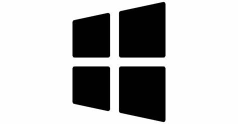
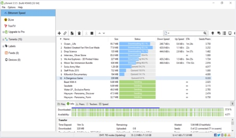

Experimento o µTorrent web
Pesquise por torrents e reproduza-os diretamente no seu navegador. A maneira mais rápida, fácil e agradável de conseguir torrent, ponto final

Transferências µTorrent para Windows
O software de torrents para computador n.º 1 para Windows, com mais de mil milhões de transferências.
| Funcionalidades | Pro | Gratuito |
|---|---|---|
| mundo de conteúdo: aceda a milhões de torrents | ||
| Segurança adicional: verifique torrents, bloqueie todos os vírus | ||
| Livre de anúncios: sem distrações, use menos banda larga | ||
| Suporte Premium: acesso prioritário a ajuda especializada | ||
| Stream Torrents: veja sem esperar | ||
| Assista em qualquer lugar: converta arquivos, reproduza em HD |
Classic
(Stable 3.5.5 Build 45952)
Instale o cliente de torrent original para download em massa no Windows.
For Windows (4.54 MB) | Inglês (EUA) – 12/03/2021
Notas de lançamento Faça o download do pacote de idiomas (1.28 MB) - 30/07/2020 | Idiomas disponíveis | Agradecimentos aos nossos tradutores

µTorrent Classic beta
For Windows (2.05 MB) | Inglês (EUA) – 04/03/2021
Notas de lançamentoTorrent downloader premium para o Windows
| µTorrent Web Pro | $19.95 | Compre agora > |
| µTorrent Web Ad-Free | $4.95 | Compre agora > |
| µTorrent Web Pro+VPN | $69.95 | Compre agora > |
| µTorrent Classic Pro | $19.95 | Compre agora > |
| µTorrent Classic Ad-Free | $4.95 | Compre agora > |
| µTorrent Classic Pro+VPN | $69.95 | Compre agora > |